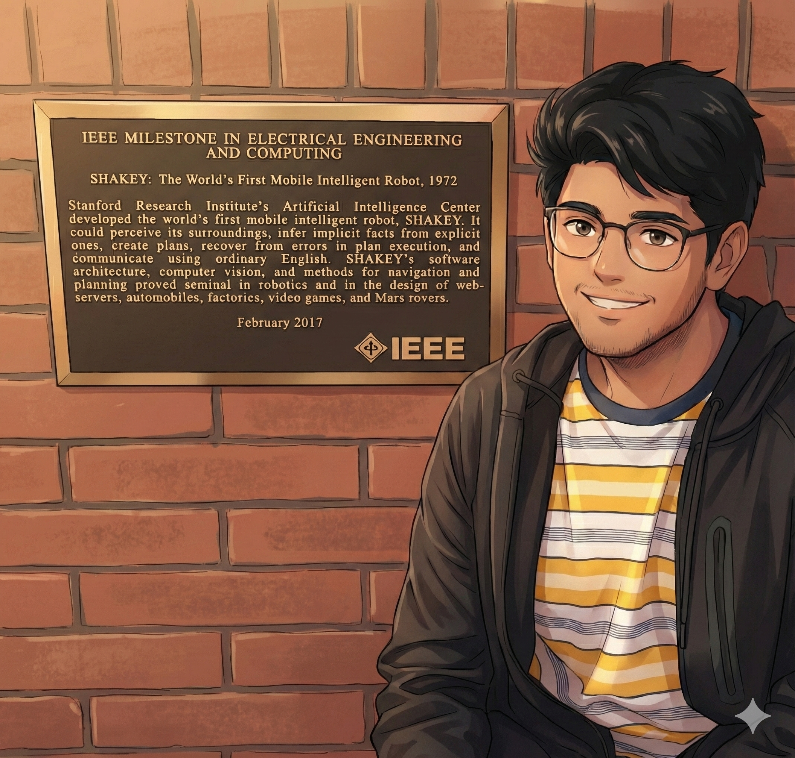

Welcome to the Blog!
This is your first blog post. You can now easily add more updates here.
Posted on July 2,
2025

Much like Neo in The Matrix, I don't just see the world as it appears—I see the code behind it. I am a PhD Scholar at the Robotics Research Center, IIIT Hyderabad, advised by Dr. K. Madhava Krishna.
The Problem: My work tackles the "Grand Prix" of chaos: solving autonomous navigation in environments populated by biased, heuristic-driven human agents. While robots run on logic, humans run on a deprecated operating system called "Emotion." We treat traffic laws less like rigid rules and more like Terms and Conditions—mostly ignored. If we build systems that assume humans are rational, we build systems that fail. My research is an attempt to engineer optimality in the face of human irrationality—ensuring that when a pedestrian acts like a glitch in the simulation, the robot handles it like a feature.
The Philosophy: To quote Dr. House, "Everybody lies." But data doesn't. I feel fortunate to research in the Age of Data, the only era where the world reveals its true colors. Data acts as our "Red Pill," stripping away the surface reality to quantify our biases and decode the emergent structures that were previously invisible. It gives us the clarity to build systems that are finally street-smart.
Offline Mode: When I’m not debugging reality, I’m usually observing it. I follow Formula 1 meticulously (where the engineering actually works) and have returned to watching cricket (where chaos usually wins). I play the guitar occasionally, but mostly I’m seeking the signal in the noise of the local music scene—hopping between classical fusion gigs and modern rock sets.
If you are interested in discussing the nuances of social navigation, the philosophy of data, or just want to recommend a good local band, feel free to reach out.
Insights, stories, and updates from my journey.
This is your first blog post. You can now easily add more updates here.
Franka Emika Panda Robot performing pick and place operations with ROS2 and MoveIt2